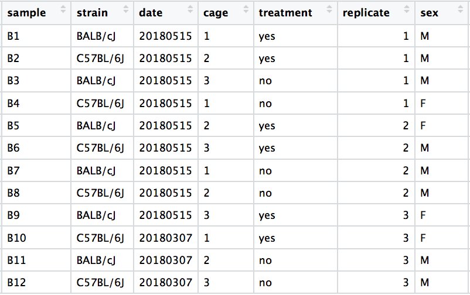
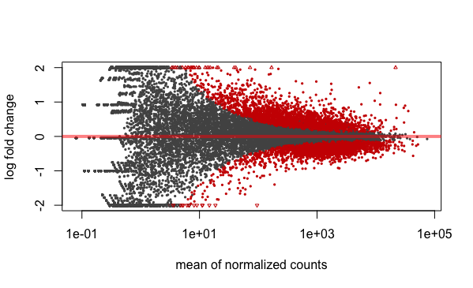
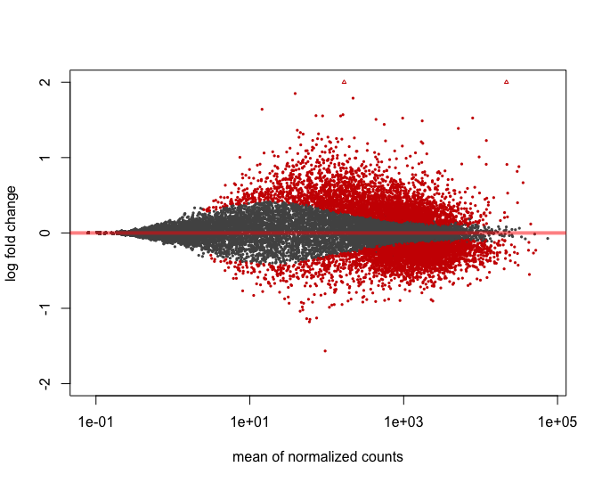

cran.packages <- c("tidyverse",
"ggrepel",
"kableExtra",
"RColorBrewer",
"pheatmap",
"devtools")
cran.load <- function(pkg){
new.pkg <- pkg[!(pkg %in% installed.packages()[, "Package"])]
if (length(new.pkg)){
install.packages(new.pkg, dependencies = TRUE)
}
sapply(pkg, require, character.only = TRUE)
}
cran.load(cran.packages)DESeq2-Visualisation
Overview
- Loading packages
- Loading saved data
- Dispersion plots
- PCA plots
- Heatmap
- Pairwise comparison
- MA plot
- Volcano plot
- Results table
CRAN packages
Install CRAN packages
Bioconductor Packages
Install Biocondustor packages
bioconductor.packages <- c("DESeq2",
"biomaRt",
"apeglm")
bioconductor.load <- function(pkg){
new.pkg <- pkg[!(pkg %in% installed.packages()[, "Package"])]
if (length(new.pkg)){
if (!requireNamespace("BiocManager", quietly = TRUE))
install.packages("BiocManager")
BiocManager::install(new.pkg)
}
sapply(pkg, require, character.only = TRUE)
}
bioconductor.load(bioconductor.packages)Github Packages
Install package fro GitHub
git.packages <- c("pipelineTools")
repository <- "GrahamHamilton"
git.load <- function(pkg){
new.pkg <- pkg[!(pkg %in% installed.packages()[, "Package"])]
if (length(new.pkg))
install_github(paste(repository,new.pkg,sep = "/"), dependencies = TRUE)
sapply(pkg, require, character.only = TRUE)
}
git.load(git.packages)Load Save Data
Load the data from the previous R session
Results Directory
Create a results directory for the DESeq2 results files
Dispersion
Dispersion is a measure of the spread of the data. DESeq2 dispersion estimates are:
- inversely related to the mean
- directly related to variance
Based on this relationship, the dispersion is higher for small mean counts and lower for large mean counts.
Dispersion estimates reflect the variance in gene expression for a given mean value.
Dispersion plots
- Black points - dispersion estimates for each gene
- Red line - fitted to the gene-wise dispersion estimates
- Blue points - gene-wise dispersion estimates moved toward the expected dispersion values, “shrinking”

Principle Component Analysis
Principal Component Analysis (PCA) is a technique used to emphasize variation and bring out strong patterns in a dataset1.
Plot expression values of Sample 1 versus Sample 2 
PCA
- Draw line through the data with the most variation, PC1
- Draw line through the data with the second most variation, PC2
- PCA will compute a per sample score
PCA
- Dataset have larger dimensions
- n-dimensional space with n axes
- Principle component matrix with samples and scores
- Plot principal components against each other
- Expect that biological replicates to have similar scores
- Samples from different treatment groups have different scores
PCA
Example PCA data
PCA
Treatment - No variation on PC1 or PC2 
Cages - No variation on PC1 or PC2
Strain - variation PC1 
Sex - variation PC2 
PCA
Explore other Principle components for variation due to Treatment

PCA
- Samples separate by treatment on PC3
- Can regress out the variation driving PC1 and PC2
- Add Strain and Sex as confounding factors to the model
PCA
Count data transformations by regularized logarithm and variance stabilizing transformations, used for Principle Component Analysis.
PCA Plots
Calculate the principle component values using the R package prcomp(). Add the meta data from the sample description table.
| Sample | PC1 | PC2 | PC3 | PC4 | PC5 | PC6 | PC7 | PC8 | Condition |
|---|---|---|---|---|---|---|---|---|---|
| Control_1 | -86.28054 | -34.041901 | 19.1629679 | -1.0008706 | 0.2727963 | -0.1937691 | -0.2299436 | 0 | Control |
| Control_2 | -87.42798 | -35.173093 | -18.8606179 | 0.8237575 | -0.1618021 | 0.0756380 | 0.2628584 | 0 | Control |
| Control_3 | -48.82317 | 47.335772 | 0.8659648 | 15.3859036 | 2.3232593 | -0.5460535 | -0.9021464 | 0 | Control |
| Control_4 | -44.71270 | 46.267735 | -1.1147754 | -15.6747137 | -2.8408276 | 0.7682248 | 0.7150646 | 0 | Control |
| Treatment_1 | 65.74631 | -4.817170 | -0.7033761 | -3.2193434 | 13.3075631 | -10.1391418 | -1.3050256 | 0 | Treatment |
| Treatment_2 | 68.01609 | -7.133756 | -0.2467674 | 0.1463250 | -3.7462348 | 6.1030450 | -13.7742179 | 0 | Treatment |
PCA Plots
Can also calculate the percentage variaction for each principle component
| 80.2 |
| 14.9 |
| 1.6 |
| 1.1 |
| 0.9 |
| 0.7 |
PCA Plots
Plot PC1 against PC2 using ggplot2
PCA Plots
Similar plot using the vsd expression values
pca <- prcomp(t(vsd_mat))
pca_data <- pca$x %>%
as.data.frame() %>%
rownames_to_column(var = "Sample") %>%
left_join(sample_table)
percent_var <- round(pca$sdev^2/sum(pca$sdev^2) * 100, digits = 1)
vsd_pca_plot <- ggplot(pca_data,aes(PC1,PC2, label=Sample, color=Condition)) +
geom_point(size=5) +
geom_text_repel(colour = "black",size=3) +
xlab(paste0("PC1: ",percent_var[1],"% variance")) +
ylab(paste0("PC2: ",percent_var[2],"% variance")) +
theme_classic() +
labs(title = "PCA Plot",
subtitle = "vsd transformed ") +
theme(legend.position = "right",
panel.grid.major.x = element_line("grey"),
panel.grid.major.y= element_line("grey"))
ggsave(filename = "vsd_PCA.png",
plot = vsd_pca_plot,
path = deseq2_results_dir)
vsd_pca_plotPCA Plots

Heatmap
Get a list ENSEMBL gene ids, with a p adjusted value of 0.1 or less
de_genes <- results(dds) %>% # Get the de results
as.data.frame() %>% # Convert results to a data frame
rownames_to_column(var = "ensembl_gene_id") %>% # add the ensembl ids as a data frame column
filter(padj <= qvalueCutoff) %>% # Select data frame rows that have p values below the cut off
pull(ensembl_gene_id) # get the ensembl ids of the filtered genes as a character vector| ENSG00000188976 |
| ENSG00000187961 |
| ENSG00000187583 |
Heatmap
Create a table of log transformed normalised read counts. Convert into Z-scores.
Z-scores - Take the log of the read counts, subtract the mean for the gene then divide by the standard deviation for that gene.
log2_de_genes <- total_norm_counts %>%
filter(ensembl_gene_id %in% de_genes) %>% # Filter the normalised counts data frame for rows with the ensembl id of the differentially expressed genes list
column_to_rownames(var = "ensembl_gene_id") %>% # convert the ensembl_gene_id column to the dtaframe rownames
mutate(across(where(is.numeric), ~ .x + 1)) %>% # Add 1 to all the values to avoid NaN errors
log2() # Log2 tranform the data frame values| Control_1 | Control_2 | Control_3 | Control_4 | Treatment_1 | Treatment_2 | Treatment_3 | Treatment_4 | |
|---|---|---|---|---|---|---|---|---|
| ENSG00000188976 | 9.141637 | 9.251128 | 9.647133 | 9.635403 | 10.03776 | 9.928693 | 9.924111 | 10.11613 |
| Control_1 | Control_2 | Control_3 | Control_4 | Treatment_1 | Treatment_2 | Treatment_3 | Treatment_4 | |
|---|---|---|---|---|---|---|---|---|
| ENSG00000188976 | -1.577782 | -1.273966 | -0.1751317 | -0.2076823 | 0.9087651 | 0.6061395 | 0.593426 | 1.126232 |
Heatmap
num_colours = 100
symetric_breaks <- seq(-max(abs(z_scores)),
max(abs(z_scores)),
length.out = num_colours + 1)
column_annotations <- sample_table %>%
column_to_rownames(var = "Sample")
ph <- pheatmap(z_scores,
color =colorRampPalette(c("#003865", "#FFFFFF","#B30C00"))(num_colours),
breaks = symetric_breaks,
show_rownames = F,
annotation_col = column_annotations)png
2 Heatmap
Annotations
Create an annotations table using data from ENSEMBL Biomart
database <- "hsapiens_gene_ensembl"
mart <- "genes"
filt <- "ensembl_gene_id"
ensembl <- useEnsembl(biomart = mart, dataset = database)
att <- c("ensembl_gene_id","external_gene_name","chromosome_name","start_position","end_position","gene_biotype","entrezgene_id")
annotations <- getBM(attributes=att,filter=filt,values=rownames(dds),mart=ensembl) %>%
distinct(ensembl_gene_id, .keep_all = TRUE)| ensembl_gene_id | external_gene_name | chromosome_name | start_position | end_position | gene_biotype | entrezgene_id |
|---|---|---|---|---|---|---|
| ENSG00000000457 | SCYL3 | 1 | 169849631 | 169894267 | protein_coding | 57147 |
| ENSG00000000460 | C1orf112 | 1 | 169662007 | 169854080 | protein_coding | 55732 |
| ENSG00000000938 | FGR | 1 | 27612064 | 27635185 | protein_coding | 2268 |
Pairwise differential expression
Select the groups for comparison
Pairwise Results
Create directory for DESeq2 data
Get the sample names for the contrast
Pairwise Results
Get the log2 normalised counts to the results tables
| ensembl_gene_id | Control_1 | Control_2 | Control_3 | Control_4 | Treatment_1 | Treatment_2 | Treatment_3 | Treatment_4 |
|---|---|---|---|---|---|---|---|---|
| ENSG00000186092 | 0.00000 | 0.000000 | 0.00000 | 0.000000 | 0.00000 | 0.000000 | 0.000000 | 0.00000 |
| ENSG00000284733 | 0.00000 | 0.000000 | 0.00000 | 0.000000 | 0.00000 | 0.000000 | 0.000000 | 0.00000 |
| ENSG00000284662 | 0.00000 | 0.000000 | 0.00000 | 0.000000 | 0.00000 | 0.000000 | 0.000000 | 0.00000 |
| ENSG00000187634 | 10.67159 | 3.755249 | 10.44547 | 2.743786 | 12.04994 | 7.806789 | 8.671382 | 9.70868 |
Pairwise Results
Create the results table
- The order of the names determines the direction of fold change reported
- The second element is the level that is used as baseline
- Observe a log2 fold change of -2 - gene expression is lower treatment relative to the control
Add annotations and normalised read counts to the results table using the dplyr left_join command
contrast <- results(dds, contrast = c("Condition", test_condition, base_condition)) %>% # Get the pair se comparison results
as.data.frame() %>% # Convert to dataframe
rownames_to_column(var = "ensembl_gene_id") %>% # Create an ensembl gene id column
left_join(annotations, by = "ensembl_gene_id")%>% # merge annotations by ensembl gene id
left_join(contrast_total_norm_counts, by = "ensembl_gene_id") %>% # Merge normalised counts by ensembl gene id
arrange(padj) %>% # Sort the dataframe by the p adjusted value ascending
replace_na(list(log2FoldChange = 0.001))Pairwise Results
- baseMean - mean of normalized counts for all samples
- log2FoldChange - log2 fold change, condition treated vs untreated
- lfcSE - standard error, condition treated vs untreated
- stat - Wald statistic, condition treated vs untreated
- pvalue - Wald test p-value: condition treated vs untreated
- padj - BH adjusted p-values
| ensembl_gene_id | baseMean | log2FoldChange | lfcSE | stat | pvalue | padj | external_gene_name | chromosome_name | start_position | end_position | gene_biotype | entrezgene_id | Control_1 | Control_2 | Control_3 | Control_4 | Treatment_1 | Treatment_2 | Treatment_3 | Treatment_4 |
|---|---|---|---|---|---|---|---|---|---|---|---|---|---|---|---|---|---|---|---|---|
| ENSG00000157191 | 8171.718 | -2.429669 | 0.0374863 | -64.81491 | 0 | 0 | NECAP2 | 1 | 16440721 | 16460078 | protein_coding | 55707 | 13556.4812 | 13858.7451 | 14103.1250 | 13621.5255 | 2555.7914 | 2514.9013 | 2576.0675 | 2587.1079 |
| ENSG00000117090 | 2322.100 | -5.224265 | 0.0775600 | -67.35771 | 0 | 0 | SLAMF1 | 1 | 160608106 | 160647044 | protein_coding | 6504 | 4554.9919 | 4369.2318 | 4578.5976 | 4588.9821 | 118.6919 | 125.4663 | 127.4026 | 113.4383 |
| ENSG00000026751 | 4495.926 | -4.690935 | 0.0870932 | -53.86110 | 0 | 0 | SLAMF7 | 1 | 160739057 | 160754821 | protein_coding | 57823 | 8364.7508 | 8424.9003 | 9178.0860 | 8659.3886 | 366.9206 | 301.1190 | 320.1741 | 352.0674 |
| ENSG00000072694 | 2202.988 | 4.309099 | 0.1114264 | 38.67216 | 0 | 0 | FCGR2B | 1 | 161663143 | 161678654 | protein_coding | 2213 | 243.6681 | 229.0702 | 186.2775 | 190.6931 | 4103.6057 | 4273.6594 | 4433.7444 | 3963.1856 |
Pairwise Results
Save the results table to a file
MA Plot
- MA plot shows the mean of the normalized counts versus the log2 foldchanges.
- Significantly differentially expressed genes are colored.
MA Plot
Plot the log of the baseMean against the Log fold change
ma_plot <- ggplot(contrast, aes( x = log10(baseMean), y = log2FoldChange, colour = padj < 0.1 )) +
geom_point(size = 0.5) +
scale_colour_manual(name = 'padj < 0.1', values = setNames(c("#003865", "#cccccc"), c(T, F))) +
scale_y_continuous(breaks = seq(floor(min(contrast$log2FoldChange)), ceiling(max(contrast$log2FoldChange)), )) +
geom_hline(yintercept = 0, colour = "#B30C00", alpha = 0.5) +
theme_classic() +
theme(
panel.grid.major.x = element_blank(),
panel.grid.major.y = element_blank(),
axis.line = element_line(colour = "#8c8c8c"),
legend.position = "none"
) +
labs(title = paste(contrast_name, "MA Plot", sep = " "))MA Plot
These data do not exhibit over dispersion to any great extent
Overdispersion
- RNASeq data exhibits overdispersion
- Variance > Mean
- Model - Negative Binomial
- However, does not account for large dispersion observed with low read counts
- log2 fold changes adjusted, lfcShrink()
Overdispersion
Example unshrunken results 
Example shrunken results 
Overdispersion
- LfcShrink - shrinkage of the LFC estimates toward zero when the information for a gene is low
- Low counts
- High dispersion values
Shrinking the log2 fold changes will not change the total number of genes that are identified as significantly differentially expressed
Log Fold Shrinkage
Create a results table with the lof fold shrinkage changes
lfc_contrast <- lfcShrink(dds, coef = resultsNames(dds)[2], type = "apeglm") %>%
as.data.frame() %>% # Convert to dataframe
rownames_to_column(var = "ensembl_gene_id") %>% # Create an ensembl gene id column
left_join(annotations, by = "ensembl_gene_id")%>% # merge annotations by ensembl gene id
left_join(contrast_total_norm_counts, by = "ensembl_gene_id") %>% # Merge normalised counts by ensembl gene id
arrange(padj) %>% # Sort the dataframe by the p adjusted value ascending
replace_na(list(log2FoldChange = 0.001))Log Fold Shrinkage
Save the log fold shruken results table to a file
Log Fold Shrinkage
Plot the LFC shrunken data as an MA plot
ma_plot <- lfc_contrast %>%
ggplot(aes( x = log10(baseMean), y = log2FoldChange, colour = padj < 0.1 )) +
geom_point(size = 0.5) +
scale_colour_manual(name = 'padj < 0.1', values = setNames(c("#003865", "#cccccc"), c(T, F))) +
scale_y_continuous(breaks = seq(floor(min(lfc_contrast$log2FoldChange)), ceiling(max(lfc_contrast$log2FoldChange)), )) +
geom_hline(yintercept = 0, colour = "#B30C00", alpha = 0.5) +
theme_classic() +
theme(
panel.grid.major.x = element_blank(),
panel.grid.major.y = element_blank(),
axis.line = element_line(colour = "#8c8c8c"),
legend.position = "none"
) +
labs(title = paste(contrast_name, "MA Plot", sep = " "))
ma_plotLog Fold Shrinkage
Volcano Plot
Add a column to the resuts data frame stating that a gene is significantly either UP or DOWN regulated.
| ensembl_gene_id | baseMean | log2FoldChange | lfcSE | stat | pvalue | padj | external_gene_name | chromosome_name | start_position | end_position | gene_biotype | entrezgene_id | Control_1 | Control_2 | Control_3 | Control_4 | Treatment_1 | Treatment_2 | Treatment_3 | Treatment_4 | Expression |
|---|---|---|---|---|---|---|---|---|---|---|---|---|---|---|---|---|---|---|---|---|---|
| ENSG00000157191 | 8171.718 | -2.429669 | 0.0374863 | -64.81491 | 0 | 0 | NECAP2 | 1 | 16440721 | 16460078 | protein_coding | 55707 | 13556.4812 | 13858.7451 | 14103.1250 | 13621.5255 | 2555.7914 | 2514.9013 | 2576.0675 | 2587.1079 | Down-regulated |
| ENSG00000117090 | 2322.100 | -5.224265 | 0.0775600 | -67.35771 | 0 | 0 | SLAMF1 | 1 | 160608106 | 160647044 | protein_coding | 6504 | 4554.9919 | 4369.2318 | 4578.5976 | 4588.9821 | 118.6919 | 125.4663 | 127.4026 | 113.4383 | Down-regulated |
| ENSG00000026751 | 4495.926 | -4.690935 | 0.0870932 | -53.86110 | 0 | 0 | SLAMF7 | 1 | 160739057 | 160754821 | protein_coding | 57823 | 8364.7508 | 8424.9003 | 9178.0860 | 8659.3886 | 366.9206 | 301.1190 | 320.1741 | 352.0674 | Down-regulated |
| ENSG00000072694 | 2202.988 | 4.309099 | 0.1114264 | 38.67216 | 0 | 0 | FCGR2B | 1 | 161663143 | 161678654 | protein_coding | 2213 | 243.6681 | 229.0702 | 186.2775 | 190.6931 | 4103.6057 | 4273.6594 | 4433.7444 | 3963.1856 | Up-regulated |
Volcano Plot
Plot the Log fold change against the log of the adjusted P value
vp <- ggplot(data = contrast, aes(x = log2FoldChange,y = -log10(padj))) +
geom_point(aes(color = Expression), size = 3/5) +
scale_color_manual(values = c("#003865", "#CCCCCC","#B30C00")) +
xlab(expression("Log"[2]*" Fold Change")) +
ylab(expression("-Log"[10]*~ ""~italic(P)~"value")) +
geom_vline(xintercept = c(-foldchange, foldchange),
col = "#005C8A",
linetype = "dotted",
alpha = 0.4,
linewidth = 1) +
geom_hline(yintercept = -log10(qvalueCutoff),
col = "#005C8A",
linetype = "dotted",
alpha = 0.4,
linewidth = 1) +
theme_classic() +
theme(panel.grid.major.x = element_blank(),
panel.grid.major.y = element_blank(),
axis.line = element_line(colour = "grey80"),
plot.title = element_text(size = 30),
axis.title = element_text(size = 25),
axis.text = element_text(size = 25),
legend.text=element_text(size = 15)) +
guides(colour = guide_legend(override.aes = list(size=1.5)))Volcano Plot
Iterate through the pairwise comparisons write out comma seperated files, MA plots, Volcano plots and heatmaps for each comparison